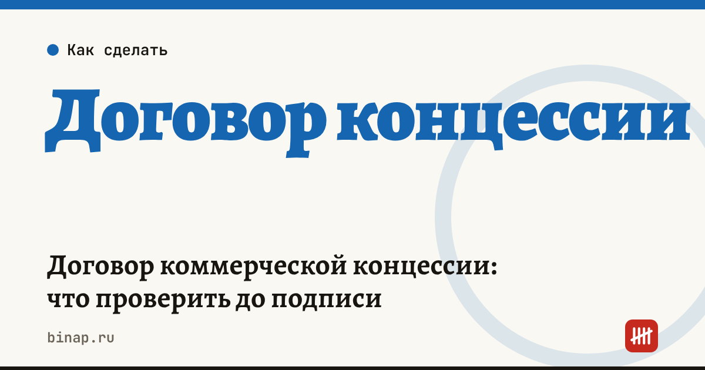

Договор коммерческой концессии: что проверить до подписи

Франшиза в российском праве — это договор коммерческой концессии (глава 54 ГК РФ). По нему правообладатель разрешает вам использовать его товарный знак, ноу-хау и деловую репутацию за вознаграждение. Договор пишет франчайзер, и почти всегда в его пользу. Ниже — 10 пунктов, которые стоит проверить до подписи, и что в них искать.
Коротко
- Стороны договора — коммерческие организации и ИП; самозанятый и физлицо без статуса ИП франчайзи быть не могут.
- Предоставление права использовать товарный знак по договору концессии подлежит государственной регистрации в Роспатенте; без неё право считается не предоставленным.
- Вознаграждение может быть паушальным взносом, роялти, их сочетанием или в другой форме — всё это в договоре.
- Договор может ограничивать вас: территория, цены, поставщики, запрет конкурировать. Часть таких условий закон признаёт ничтожной.
- Главный риск — условия выхода и штрафы при расторжении: читайте их до подписи.
Сроки, изменения и разборы для ИП и самозанятых — каждое утро в Telegram и MAX. Подпишитесь, чтобы не пропустить.
10 пунктов для проверки
| Пункт | Что искать |
|---|---|
| 1. Предмет | какой товарный знак, какое ноу-хау, есть ли свидетельство на знак у франчайзера |
| 2. Регистрация | кто и когда регистрирует договор в Роспатенте |
| 3. Территория | есть ли исключительная территория и её границы |
| 4. Платежи | паушальный взнос, роялти, маркетинговый сбор, база для процента |
| 5. Поставки | обязательные закупки у франчайзера и как меняются цены |
| 6. Стандарты | что входит в стандарты, кто и как проверяет, штрафы за нарушения |
| 7. Поддержка | обучение, IT-система, реклама — что именно обязан дать франчайзер |
| 8. Срок | на сколько лет договор и как продлевается |
| 9. Выход | как расторгнуть, сколько стоит, что с оборудованием и вывеской |
| 10. Запрет конкуренции | срок и территория после окончания договора |
Что проверить отдельно
- Свидетельство на товарный знак. Попросите номер и проверьте его в открытом реестре Роспатента: знак должен принадлежать франчайзеру и действовать для ваших товаров или услуг.
- Регистрацию договора. Если её нет, вы фактически работаете под чужим знаком без права — это риск претензий и запрета работать.
- Роялти от чего. Процент от выручки и процент от прибыли — очень разные суммы. Как учитывать платежи на УСН — в статье Паушальный взнос и роялти: учёт на УСН.
- Условия выхода. Посчитайте, во что обойдётся расторжение через год: неустойка, демонтаж вывески, остатки обязательного товара.
Пример: роялти от выручки и от прибыли
Расчёт редакции на условных цифрах. Выручка точки — 800 000 ₽ в месяц, прибыль до роялти — 100 000 ₽.
- Роялти 5% от выручки: 40 000 ₽ в месяц, у вас остаётся 60 000 ₽.
- Роялти 20% от прибыли: 20 000 ₽, у вас остаётся 80 000 ₽.
В плохой месяц с прибылью 20 000 ₽ роялти от выручки всё равно будет 40 000 ₽ — и точка уйдёт в минус. Сравните варианты на своих цифрах в калькуляторе окупаемости франшизы, а самого франчайзера проверьте по чек-листу Как проверить франчайзера: 12 пунктов. Стоит ли вообще брать франшизу — в статье Франшиза или своё дело. Все материалы — в разделе Франчайзи.
Частые вопросы
Обязательно ли регистрировать договор франшизы? Предоставление права использовать товарный знак по договору коммерческой концессии подлежит регистрации в Роспатенте. Без неё право считается не предоставленным.
Может ли самозанятый купить франшизу? По ГК стороной договора коммерческой концессии может быть коммерческая организация или ИП. Самозанятому для франшизы нужно зарегистрироваться как ИП.
Можно ли выйти из франшизы досрочно? Зависит от договора. Если срок не указан, каждая сторона может отказаться, предупредив другую не позже чем за шесть месяцев, если договор не предусматривает более долгий срок. Проверьте раздел о расторжении до подписи.